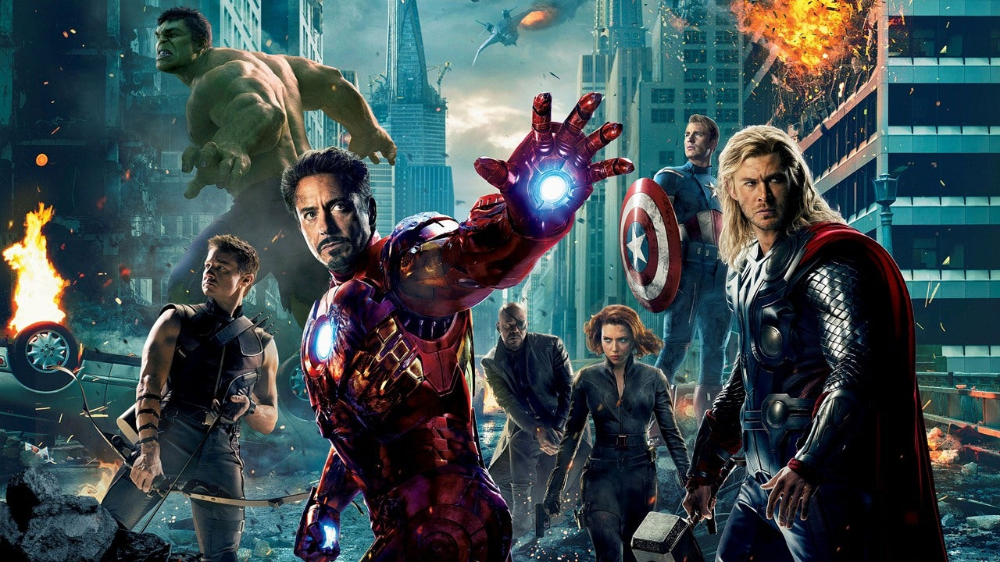

About Ironman
Tony Stark, better known as Iron Man is a genius, billionaire, playboy, inventor and philantropist who uses his talents to fight off villains and protect Earth. Although starting off small,Stark develops his suit, adding weapons and other technological devices he designed through his company, Stark Industries. His suit has an AI assistant called Jarvis and his latest nano tech suit allows him to perform extraordinary tasks when in battle. Iron Man is part of the Avengers, a team established by superhero's to fight villains causing threats to Earth.
Iron Man

Iron Man and the Avengers
Powers and abilities
- Flight-Iron Man's suit enables Tony Stark to fly, with upgrades increasing the speed capabilities
- Artificial Intelligence- An onboard AI system,originally Jarvis then replaced by Friday, helps Tony control his armor and connect to other systems
- Armored suit-Tony quickly dons the armor from summoning it to him and nanotech that allows the armor to grow from within a storage unit on his chest
- Super strength and durability-He has many speciaized suits including one called the Hulkbuster that is highly durable and allows him to go toe to toe with Hulk.
Allies
His allies and fellow avengers include Captain America, Black Widow, War Machine, Nick Fury, Hulk or Bruce Banner, Thor, Vision, Ant-Man, Spider-Man, Doctor Strange, Falcon, Wong, Hawkeye, Wanda Maximoff and The guardians of the galaxy, just to name a few.
Enemies
The villains he faced include Ultron, Thanos, Ulysses Klaue, Loki, Zemo, Ebony Maw and Cull Obsidian, just to name a few.
Here are some quick links to some of the avengers info: